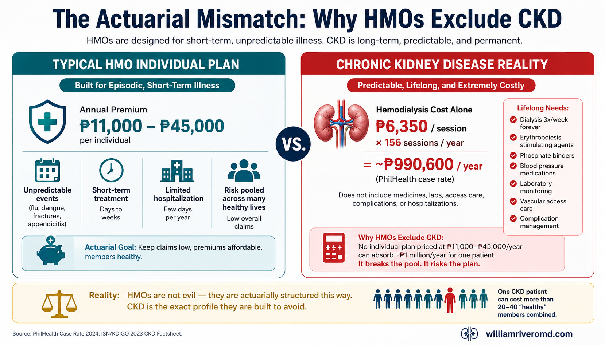
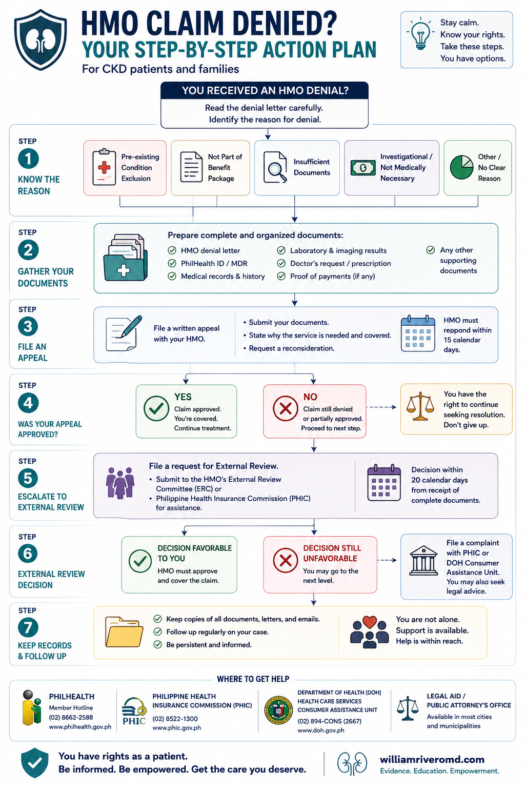
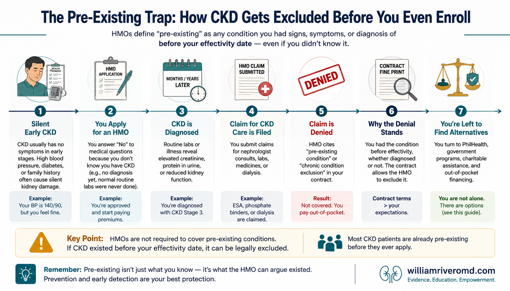
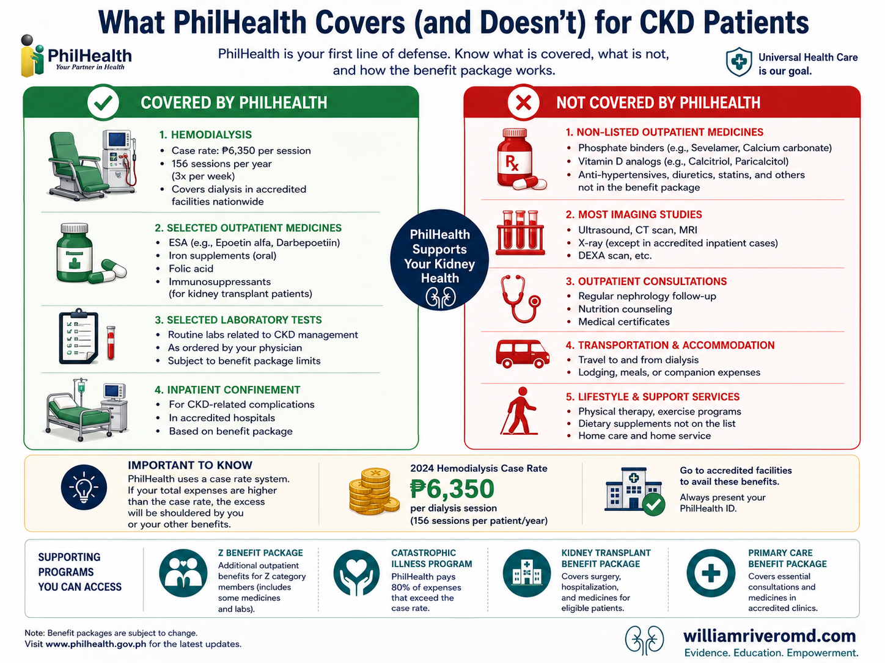
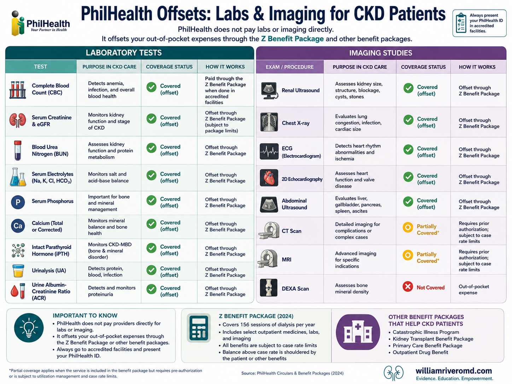
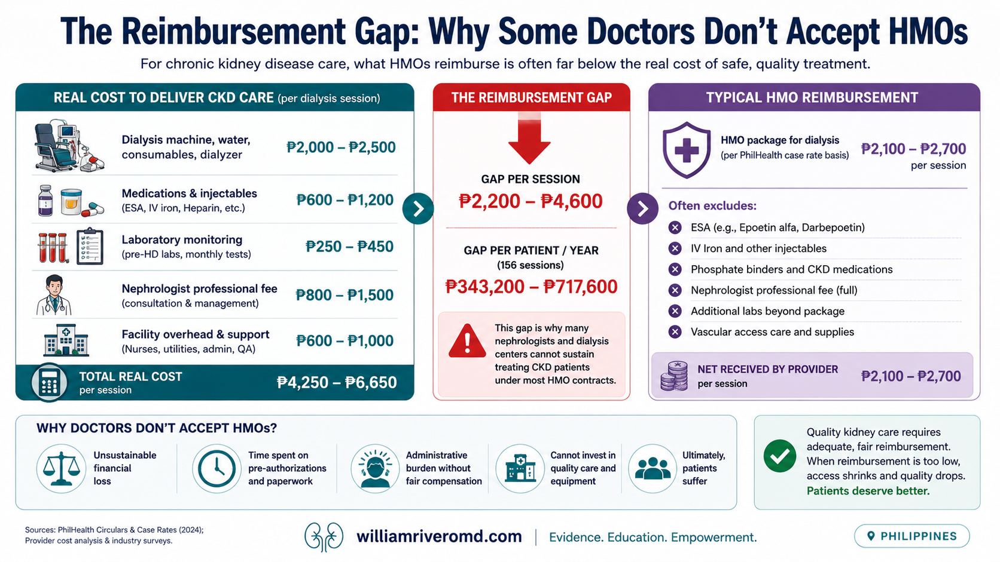
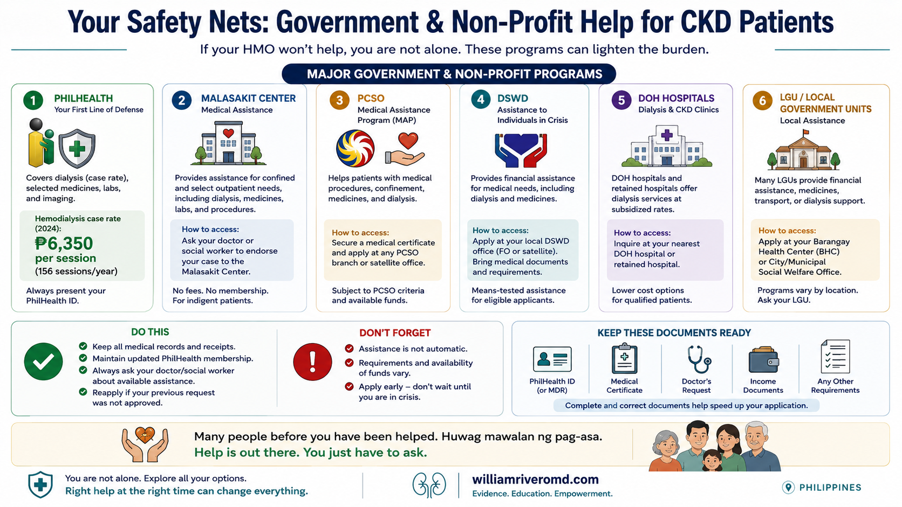

You paid your HMO premiums for years. Then your nephrologist handed you the diagnosis — and suddenly your health card is useless. Or worse: your doctor won't even accept it. If either of these has happened to you, you are not alone, and you are not wrong to feel betrayed. This guide explains exactly why Philippine HMOs are structured to exclude chronic kidney disease, why your nephrologist may not be accredited with your plan, what your legal rights are, what PhilHealth and the government actually cover, and the 11 questions to ask any HMO before signing up. Binayaran ninyo ang inyong HMO premiums sa loob ng maraming taon. Pagkatapos, ibinigay sa inyo ng inyong nephrologist ang diagnosis — at bigla, walang silbi ang inyong health card. O mas masama: ayaw itong tanggapin ng inyong doktor. Kung nangyari sa inyo ang alinman dito, hindi kayo nag-iisa, at hindi kayo mali sa pakiramdam na napagtaksilan. Ipinapaliwanag ng gabay na ito kung bakit ginawa ang mga HMO sa Pilipinas upang hindi saklawin ang chronic kidney disease. Gibayran ninyo ang inyong HMO premiums sulod sa daghang tuig. Dayon, gihatag sa imong nephrologist ang diagnosis — ug kalit, walay pulos ang imong health card. O mas grabe: dili kini dawaton sa imong doktor. Kung nahitabo kanimo ang usa niini, dili ka nag-inusara, ug dili ka sayop nga mobati nga gibudhian. Gipasabot niini nga giya nganong gimugna ang mga HMO sa Pilipinas aron dili saklawon ang chronic kidney disease. Binayaran yu ing kekong HMO premiums king lub ning dakal a banua. Kaibat, binie na ning kekong nephrologist ing diagnosis — at agad-agad, alang silbi ing kekong health card. O mas marok: ali da tatanggapan ning kekong doktor. Nung mililyari keka ing nanu man kareti, ali kang dili-dili, at ali kang mali king pamiramdam a mebudhi. Ipaliwanag ning gabay a ini bakit gewa la reng HMO king Filipinas para ali sasaklawan ing chronic kidney disease.
HMOs Are Built for Episodes — Not for a Lifelong Disease Ang mga HMO ay Ginawa para sa mga Pangyayari — Hindi para sa Habambuhay na Sakit Ang mga HMO Gimugna para sa mga Panghitabo — Dili para sa Tibuok-Kinabuhi nga Sakit Reng HMO Gewa la para king mga Pangyayari — Ali para king Habambuhay a Sakit
For most Filipino kidney patients, the health card that felt like security at enrollment turns out to exclude the one disease they now have. Understanding why is the first step to filling the gap.
HMOs are actuarially designed for episodic illness, not lifelong progressive disease. CKD is expensive, predictable, and permanent — the exact profile HMOs are built to avoid. Four structural forces explain it:
1. The silent-disease problem
CKD has no symptoms until Stage 3–4. Most Filipinos are diagnosed late — meaning they already have CKD before they ever seek HMO enrollment. By definition, they are pre-existing at the moment of application.
2. The actuarial mismatch
HMO premiums are pooled risk. Dialysis costs ₱6,350/session × 156 sessions/year ≈ ₱990,600/year in PhilHealth case rates alone — before medications, labs, and access care. No HMO individual plan priced at ₱11,000–₱45,000/year can absorb this.
3. The chronic-disease carve-out
Philippine HMO contracts routinely exclude "maintenance treatment for chronic conditions." This clause alone eliminates ESA, phosphate binders, antihypertensives, nephrology follow-ups, and outpatient dialysis from standard coverage.
4. The legal gap
The Philippine Labor Code mandates PhilHealth contributions — not HMO coverage. HMOs are voluntary, regulated by the Insurance Commission, and under no legal obligation to cover pre-existing conditions.

The actuarial mismatch in one view: an individual HMO premium (₱11,000–₱45,000/year) against the cost of one year of dialysis (≈₱990,600/year, before medicines and labs). CKD is expensive, predictable, and permanent — the exact risk HMOs are built to avoid.
AHMOPI, the Insurance Commission & Your Rights AHMOPI, ang Insurance Commission at ang Inyong mga Karapatan AHMOPI, ang Insurance Commission ug ang Imong mga Katungod AHMOPI, ing Insurance Commission at Reng Kekong Karapatan
HMOs are not insurance companies under Philippine law — and that distinction has real consequences for CKD patients trying to enforce their rights.
1. What AHMOPI is — and what it isn't
The Association of Health Maintenance Organizations of the Philippines, Inc. (AHMOPI) is the recognized trade association of Philippine HMOs, organized and registered with the SEC on November 13, 1987. It represents the industry's interests and sets professional standards among members. Importantly, AHMOPI is a trade group — not a regulator. It cannot compel its members to cover CKD or any specific condition. Membership in AHMOPI (e.g., Maxicare, MediCard, Intellicare, PhilCare) signals industry standing, not consumer-protection guarantees.
2. HMOs are not insurance companies — confirmed by the Supreme Court
In Philippine Health Care Providers Inc. v. Commissioner of Internal Revenue (G.R. No. 167330, September 18, 2009), the Supreme Court ruled that HMOs are not insurance companies under the Insurance Code. Their role is to provide or arrange access to healthcare services — not to indemnify losses. This means standard insurance-law consumer protections do not automatically apply to HMO contracts.
3. Who actually regulates HMOs: the Insurance Commission
Under Executive Order No. 192 (series of 2015), regulatory oversight of HMOs was transferred from the Department of Health to the Insurance Commission (IC). The IC licenses HMOs, approves their Health Care Agreements, and monitors financial solvency. All Philippine HMOs must hold a current Certificate of Authority from the IC. Verify your HMO's license at www.insurance.gov.ph.
4. The Health Care Agreement — your most important document
Your HMO relationship is governed by the Health Care Agreement (HCA), a contract that must be pre-approved by the IC before it can be used (IC Circular Letter No. 2017-19). Critically:
- The HCA cannot be unilaterally changed by either party without IC approval (IC Letter of Opinion No. 2021-13).
- HCA terms must not be "unjust, inequitable, misleading or encourage misrepresentation" (IC CL 2017-19, Section 4).
- For corporate accounts, commercial terms — including benefit limits, exclusions, and co-payment structures — are negotiated between the HMO and the employer. This is why two employees under the same HMO may have very different coverage.
5. Your Bill of Rights as an HMO Member
IC Circular Letter No. 2020-12 established a Bill of Rights for HMO Members, which guarantees:
- Clear disclosure of pre-existing condition (PEC) clauses before enrollment — the HMO must tell you what is excluded and why.
- Transparency on waiting periods and coverage limits.
- The right to appeal claim denials through the IC.
6. How to challenge a wrongful denial
- Section 437 of the Insurance Code empowers the IC to fine or suspend HMO officers for patterns of wrongful denial.
- File a complaint with the IC Consumer Protection Division: www.insurance.gov.ph.
- For PhilHealth-related denials: appeal to the PhilHealth Regional Office within 60 calendar days of receipt of the denial notice.
- Moral, exemplary, and actual damages may be awarded in egregious cases, with 6% annual interest from the date of extrajudicial demand.
7. The double-claim rule
Even if you hold both an HMO and a separate insurance policy, you cannot claim the same medical expense from both. Philippine law prohibits unjust enrichment — once a service is paid by one provider, no remaining expense exists to charge to another. HCA contracts typically include coordination-of-benefits or non-duplication clauses for this reason.
AHMOPI member HMOs as of 2026 include:
Maxicare · MediCard · Intellicare · PhilCare · Kaiser International · Cocolife · Insular Health Care · Avega · and others.
All must hold a current IC Certificate of Authority. Verify at: www.insurance.gov.ph
Your rights in plain languageAng inyong mga karapatan sa simpleng salitaAng imong mga katungod sa yano nga pinulonganReng kekong karapatan king simpleng amanu
Before you sign any HMO plan, the HMO is legally required to disclose all pre-existing condition exclusions clearly. If they don't — and your CKD claim is later denied citing a PEC clause you weren't shown — you have grounds to file a complaint with the Insurance Commission.

If your CKD claim is denied, work this path: undisclosed pre-existing exclusions → file with the Insurance Commission; otherwise check your Health Care Agreement, appeal any PhilHealth denial within 60 days, and bridge costs with PhilHealth No Balance Billing, Malasakit, PWD, and PCSO IMAP — so treatment never stops while you appeal.
"Pre-Existing Condition" Has Legal Teeth Ang "Pre-Existing Condition" ay May Ngipin sa Batas Ang "Pre-Existing Condition" Adunay Ngipon sa Balaod Ing "Pre-Existing Condition" Atin Ipan king Batas
"Pre-existing condition" sounds simple but has legal teeth — and the definition is broader than most patients realize.
1. The legal definition
Most Philippine HMO contracts adopt or adapt the Insurance Commission's model clause: a pre-existing condition is any illness, disease, or injury for which signs or symptoms were evident, or for which medical advice, diagnosis, care, or treatment was recommended or received, within twelve (12) months prior to the effective date of coverage. The practical trap for CKD: because early CKD is silent, a patient may have had "diagnosable" kidney disease within that 12-month window without knowing — and the HMO can invoke the clause retroactively when labs later confirm it.
2. Waiting periods
Philippine HMOs impose waiting periods of 6 months to 2 years before pre-existing conditions are even partially covered. During this window, all CKD-related claims are denied.
3. Coverage tiers — what to look for in any contract
| Term | What it means for CKD patients |
|---|---|
| Fully excluded | No coverage ever, regardless of waiting period. |
| Waiting period applies | Coverage begins after 6–24 months; read carefully what is included. |
| Partially covered | Capped reimbursement — may cover consults but not dialysis. |
| Covered up to MBL | Covered but limited to the annual Maximum Benefit Limit. |
4. The non-disclosure trap
Failing to declare CKD on HMO enrollment forms risks claim denial, plan cancellation, and legal liability. Always declare. Always ask what declaring means for your coverage.
5. The group-enrollment exception
Employer-sponsored group HMO plans sometimes waive pre-existing exclusions after 1–2 years of continuous group membership. If you are employed, this is your most realistic path to partial HMO coverage for CKD.
Never withhold a CKD diagnosis on an HMO application formHuwag Kailanman Itago ang Diagnosis ng CKD sa HMO Application FormAyaw Gayod Itago ang Diagnosis sa CKD sa HMO Application FormEka Kailanman Itago ing Diagnosis na CKD king HMO Application Form
If discovered, your plan can be cancelled retroactively — leaving you with denied claims and no coverage at all.

Why "silent" CKD still counts: because early kidney disease has no symptoms, it can fall inside the 12-month look-back window without your knowledge — and the HMO can invoke the clause retroactively once labs confirm it. Always declare; always ask what declaring means for coverage.
PhilHealth Is Your Most Reliable Payer — But It Has Gaps Ang PhilHealth ang Inyong Pinaka-maaasahang Tagabayad — Ngunit May mga Puwang Ang PhilHealth ang Imong Labing Kasaligang Magbabayad — Apan Adunay mga Kal-ang Ing PhilHealth ing Kekong Pekamasalig a Magbayad — Dapot Atin Puwang
PhilHealth is the most reliable payer for CKD in the Philippines — but it has gaps patients must know about.
| Benefit | Coverage | Key Conditions |
|---|---|---|
| Hemodialysis | ₱6,350/session × up to 156 sessions/year (₱990,600/year) | At accredited centers; NBB for covered services (PC 2024-0023, eff. Oct 9, 2024). A ₱450 co-pay cap applies only to additional/premium services (e.g., telemedicine, complication management) beyond the minimum standard. |
| Peritoneal Dialysis (adult CAPD) | ₱389,640–₱510,140/year | Z-benefit (PC 2024-0036); requires PhilHealth Dialysis Database registration. |
| Peritoneal Dialysis (pediatric) | up to ₱1.2M/year (APD) | Pediatric CAPD/APD only; not available to adults. |
| Kidney Transplant | ₱1.06M (living donor) – ₱2.14M (deceased donor) | Z-benefit (PC 2024-0035). |
| Post-transplant immunosuppressants | Covered under new post-KT package | Verify with your transplant center. |
| Nephrology consultation | Case rate included in HD package | |
| YAKAP primary care | Annual defined lab set + consults + essential medicines | Enrolled clinics only; replaces eKonsulta (transition complete July 1, 2026). |
| CKD Stages 1–4 (pre-dialysis) | Limited — consult case rates only | No outpatient maintenance medication coverage. |
PhilHealth does NOT cover:
- Outpatient ESA (erythropoiesis-stimulating agents) for pre-dialysis CKD
- Phosphate binders outside the HD package
- Ketoanalogue supplements
- Most antihypertensives as outpatient benefits
- Routine CKD labs (creatinine, eGFR, urine protein) outside hospital admission

PhilHealth is the most reliable payer for dialysis in the Philippines — but the coverage stops at the outpatient line. Know what is covered (left) and what you must plan to pay for (right).
The Outpatient Lab Gap — and How to Offset It
The ₱6,350 HD session package includes only a defined set of dialysis-related labs. Critical CKD monitoring tests that fall outside that package — ordered quarterly or semi-annually by your nephrologist — are entirely out-of-pocket unless you know where to look.
What the HD ₱6,350 package DOES include (per PC 2024-0023): anti-coagulation medications, drugs for anemia management, laboratory tests, dialysis supplies (dialyzers, HD solutions, dialysis kit), administrative fees, facility fees, utilities, and staff time. Specifically: CBC, creatinine, potassium, hepatitis profile, and Kt/V — the bare-minimum per-session panel.
What is NOT included — common CKD monitoring labs that are out-of-pocket:
| Test | Why Ordered | Typical Private Lab Cost |
|---|---|---|
| Serum ferritin | Iron stores for ESA dosing (KDIGO: target >200 µg/L) | ₱500–₱900 |
| Transferrin saturation (TSAT) | Iron adequacy (KDIGO: target >30%) | ₱400–₱700 |
| Serum iron + TIBC | Full iron panel | ₱600–₱1,200 |
| Intact PTH (iPTH) | CKD-MBD monitoring (KDIGO: 130–600 pg/mL) | ₱1,200–₱2,500 |
| Serum albumin | Nutritional status (KDIGO: ≥4.0 g/dL) | ₱200–₱400 |
| 25-OH Vitamin D | Bone-mineral disease, often deficient in CKD | ₱800–₱1,800 |
| HbA1c | Glycemic control in diabetic CKD patients | ₱500–₱1,000 |
| QuantiFERON-TB / TST | TB screening (CKD patients: 6–25× higher risk) | ₱1,500–₱3,500 |
| Uric acid | Gout management, CKD progression | ₱150–₱300 |
| Lipid panel | Cardiovascular risk (ACC/AHA 2026) | ₱500–₱1,200 |
| nPCR / protein catabolic rate | Dialysis adequacy and nutritional assessment | Rarely offered outpatient; needs in-unit lab |
A patient needing a quarterly iron panel + iPTH + albumin alone faces ₱2,200–₱4,600 in out-of-pocket labs every 3 months — or ₱8,800–₱18,400 per year — on top of any uncovered medication costs.
5 Strategies to Offset Outpatient Lab Costs
Strategy 1 — Time labs to coincide with hospital admission. When a CKD patient is admitted for any reason (fluid overload, infection, AKI-on-CKD), all medically necessary labs ordered during that admission are included in the case rate — no separate charge. Discuss with your nephrologist whether a planned admission (e.g., for AVF creation, access revision, or a deterioration workup) can consolidate pending quarterly labs.
Strategy 2 — Use YAKAP / Konsulta for covered annual labs. PhilHealth's YAKAP program entitles every registered member to a defined set of laboratory and diagnostic tests once per year at no charge through enrolled primary-care providers, with no co-pay under UHC. While YAKAP does not cover iPTH or ferritin, it does cover: CBC, fasting blood sugar, HbA1c (for diabetics), lipid panel, creatinine, urinalysis, and urine protein — tests that would otherwise cost ₱1,500–₱3,000 annually. Action: register at the nearest YAKAP-accredited clinic and use your annual entitlement. Find accredited clinics at philhealth.gov.ph.
Strategy 3 — PCSO Individual Medical Assistance Program (IMAP). PCSO IMAP provides cash assistance for outpatient medical expenses including laboratory tests, not just medications. Patients may apply for assistance covering specific high-cost tests (e.g., QuantiFERON-TB Gold at ₱1,500–₱3,500, iPTH at ₱1,200–₱2,500). Apply at any PCSO office with a physician's request letter, an official quote from the laboratory, and proof of indigency or financial hardship.
Strategy 4 — Government-hospital outpatient labs. DOH-retained hospitals (NKTI, JRMMC, PGH, RITM, and regional medical centers) charge significantly lower rates for outpatient labs than private diagnostic centers. NKTI in particular runs CKD-specific outpatient clinics with subsidized lab panels. Representative government vs. private rates: ferritin ₱200–₱350 (gov) vs. ₱500–₱900 (private); iPTH ₱600–₱1,200 vs. ₱1,200–₱2,500; QuantiFERON-TB ₱800–₱1,500 vs. ₱1,500–₱3,500.
Strategy 5 — PWD card 20% discount on all labs. Under RA 10754, PWD cardholders are entitled to a 20% discount on laboratory services at all licensed facilities. A CKD Stage 5 / dialysis patient who qualifies for PWD status (apply at your City/Municipal SWDO) automatically reduces every outpatient lab bill by 20% — including ferritin, iPTH, albumin, HbA1c, and TB tests. Combined with DOH-hospital rates, this can cut the annual outpatient-lab burden by 30–40%.
Bonus — LAB for ALL DOH Caravan (when available). The DOH's LAB for ALL initiative provides free laboratory services, X-ray, specialist consultations, and medicines through mobile caravans held in select provinces and cities. Services are intermittent and location-dependent, but when available represent full coverage for common CKD monitoring labs at no cost. Watch DOH and LGU social-media pages for schedules in your area.
Quick reference — lab-cost offset by strategy:
| Strategy | Best for | Estimated savings |
|---|---|---|
| YAKAP annual labs | CBC, HbA1c, lipid, creatinine | ₱1,500–₱3,000/year |
| Government-hospital labs | iPTH, ferritin, QuantiFERON | 40–60% vs. private |
| PWD card 20% discount | All labs at any facility | 20% across the board |
| PCSO IMAP | High-cost individual tests | Variable; up to full cost |
| Admission bundling | Quarterly panels during planned admission | Full coverage |

The out-of-package monitoring labs and imaging a nephrologist orders are out-of-pocket — but five offsets stack: time labs to an admission, use YAKAP's annual set, choose DOH-hospital rates, apply the PWD 20% discount, and tap PCSO IMAP for high-cost single tests.
→ See also: PWD Card for CKD Patients · CKD & Financial Stress
Imaging Studies — The Other Out-of-Pocket Gap
CKD patients need periodic imaging that the HD package does not cover. Some studies are routine surveillance; others become urgent or mandatory at specific decision points (access planning, suspected complications, transplant workup). A few carry CKD-specific safety considerations that change which study is appropriate.
| Study | When needed / required | Typical Private Cost | Government / Package Cost |
|---|---|---|---|
| Chest X-ray (PA) | Routine surveillance; fluid overload, suspected TB, pre-access, pre-transplant | ₱350–₱900 | Often bundled in dialysis imaging packages (~₱1,655 w/ ECG + CBC) |
| 2D Echo with Doppler | Cardiac assessment — LVH, ejection fraction, pericardial effusion; cardiovascular disease is the #1 killer in dialysis. Often required before transplant listing | ₱2,500–₱5,000 | Lower at DOH hospitals; some dialysis imaging packages ~₱2,040 (w/ X-ray + ECG) |
| Kidney / whole-abdomen ultrasound | Baseline kidney size, obstruction, cysts, stones; PKD surveillance; suspected post-renal AKI | ₱1,200–₱2,500 | ₱600–₱1,200 at government labs |
| AVF / AVG Doppler ultrasound | Access surveillance — stenosis, thrombosis, aneurysm, maturation assessment before first cannulation | ₱2,000–₱4,000 | Lower at DOH vascular labs; often needs referral |
| Chest CT | Indeterminate chest X-ray, suspected malignancy, complex infection | ₱6,000–₱12,000 (plain) | ₱3,000–₱6,000 government |
| Bone densitometry / X-rays | CKD-MBD assessment, renal osteodystrophy, fracture workup | ₱1,500–₱3,500 | Variable |
| Parathyroid ultrasound / sestamibi | Tertiary hyperparathyroidism workup before parathyroidectomy | ₱2,000–₱8,000 | Limited centers |
| DTPA / DMSA renal scan | Split renal function, obstruction (esp. pre-donor or pediatric) | ₱5,000–₱10,000 | NKTI and select DOH hospitals |
CKD-specific imaging safety — what every radiologist must be told
Two contrast agents carry kidney-specific risk. Always disclose your CKD stage / dialysis status before any scan:
1. Iodinated contrast (CT scans): risk of contrast-induced nephropathy in pre-dialysis CKD. May still be necessary — but requires a hydration protocol and nephrology coordination. In anuric dialysis patients the kidney risk is moot, but timing relative to the next HD session matters.
2. Gadolinium (contrast MRI): linked to Nephrogenic Systemic Fibrosis (NSF) in advanced CKD (eGFR <30) and dialysis patients. Newer macrocyclic agents are lower-risk, but the safest path is often a non-contrast MRI or an alternative modality. Never let a scan proceed without the radiologist knowing your kidney status.
→ See full guide: Contrast-Induced Nephropathy
Offsetting imaging costs. The five lab-offset strategies above (admission bundling, YAKAP, PCSO IMAP, government-hospital rates, PWD 20% discount) all apply to imaging, plus two additions specific to imaging:
- Dialysis imaging packages. Several diagnostic centers bundle the exact studies dialysis patients need most — chest X-ray + ECG + CBC + creatinine, or chest X-ray + ECG + 2D Echo (Doppler) — at flat rates (~₱1,655–₱2,040 as of Jan 2026), far cheaper than à la carte, with an additional senior-citizen discount. Ask your dialysis unit which nearby center offers a "dialysis package."
- PhilHealth coverage during admission. Imaging ordered during a covered confinement (e.g., the admission for AVF creation, access revision, or a complication workup) is included in the case rate. If a patient is being admitted anyway, this is the moment to complete a pending 2D echo or abdominal ultrasound at no separate charge.
Clinician note
2D echo and AVF Doppler are the two studies most likely to be both required and uncovered — 2D echo for transplant listing and cardiovascular surveillance, AVF Doppler for access surveillance. Where a patient faces cost pressure, time the 2D echo to a planned admission, and route AVF surveillance through a DOH vascular lab or a PWD-discounted facility.
No Balance Billing (NBB) is your right — within limits
The No Balance Billing policy is your right at PhilHealth-accredited dialysis centers — for the minimum-standard HD services covered by the ₱6,350 package. Note one legitimate exception: PhilHealth allows a co-pay capped at ₱450 for professional fees on additional or premium services beyond the minimum standard (e.g., telemedicine, managing complications during a session). If a center charges you a co-pay for routine covered services, or charges above the ₱450 cap for add-ons, ask for a written explanation and report it to the PhilHealth Action Center (02) 8662-2588.
Clinician note — a known package limitation
The HD package's lab inclusions remain a known limitation. The Philippine Society of Nephrology has formally raised that the package's standardized lab set omits BUN (essential for adequacy assessment) while including alkaline phosphatase of limited routine value — and that standardized medication dosing conflicts with the need for individualized titration. Plan your patients' out-of-package monitoring (BUN, iron studies, iPTH) accordingly.
→ See also: PhilHealth Z-Package Guide
The HMO Landscape for CKD Patients Ang Tanawin ng HMO para sa mga Pasyenteng May CKD Ang Talan-awon sa HMO para sa mga Pasyenteng Adunay CKD Ing Tanawan da reng HMO para karing Pasyenteng Atin CKD
Most Philippine HMOs do not publish CKD-specific coverage terms. What follows is based on publicly available plan descriptions as of 2026. Always request the full Schedule of Benefits and Exclusions before signing.
| HMO | Network Size | Individual Plan? | Pre-existing CKD | Dialysis Coverage | Notable for CKD |
|---|---|---|---|---|---|
| Maxicare | 1,400+ hospitals; 24,000+ doctors | Yes (MyMaxicare) | Not publicly disclosed; group plans may waive after waiting period | Listed as benefit under IP Unbundled corporate plans | Largest network; 140+ dialysis/rehab centers accredited |
| MediCard | 3,000+ clinics | Yes (Health Plus, no age limit) | Waiting period applies; not publicly specified for CKD | Not listed in individual-plan marketing | Health Plus option for seniors with no age cap |
| Intellicare | 3,000+ providers | Corporate only | Per employer contract | Per employer contract | Best for corporate employees; no individual option |
| PhilCare | 4,000+ clinics | Limited | Per contract | Not publicly disclosed | Mental-health leader; digital LOA app |
| Hive Health (HPPI) | 1,700+ hospitals/clinics; 60,000+ providers | SME/corporate only | Day 1 coverage up to MBL, no waiting period (published policy) | Must verify — Day 1 PEC coverage ≠ unlimited dialysis benefit | Only PH HMO to explicitly publish Day 1 pre-existing coverage; recommended for employed CKD patients to raise with HR |
| Kaiser International | Regional | Corporate/group | Per contract | Per contract | — |
| Cocolife Healthcare | National | Yes | Per contract | Not disclosed | — |
| Pacific Cross | National | Yes, up to age 80–100 | Health-insurance product (not HMO); pre-existing terms vary | Varies by plan | Best option for individuals seeking private health insurance rather than HMO |
The key insight: it's not which HMO — it's how you enroll
The most important distinction for a CKD patient is not which HMO — it is how you enroll. Group enrollment through an employer is almost always more favorable than individual enrollment. If you are working, talk to your HR department. If your employer uses Hive Health or is open to switching, this is currently the only Philippine HMO to publicly commit to Day 1 pre-existing condition coverage — worth raising explicitly.
Why Some Doctors Don't Accept HMOs Bakit Hindi Tinatanggap ng Ilang Doktor ang mga HMO Ngano Wala Dawata sa Ubang Doktor ang mga HMO Bakit Ali Tatanggapan da reng Aliwang Doktor Reng HMO
When a specialist refuses your HMO card, it is rarely personal. The reasons are structural — and understanding them helps patients navigate without feeling dismissed.

It's structural math, not a judgment about you: a subspecialty fee reimbursed at a fraction of its value, paid months late, on top of unpaid LOA paperwork and claim-denial risk. Ask which HMOs a clinic is accredited with before choosing a plan.
1. The reimbursement gap
HMOs reimburse physicians at negotiated rates that are often far below the Philippine Medical Association (PMA) or Philippine Society of Nephrology (PSN) fee schedules. A nephrology consultation billed at ₱1,500–₱2,500 may be reimbursed by an HMO at ₱400–₱800 — with payment delayed 30–90 days. For subspecialists in private practice, this math does not work.
2. The administrative burden
Every HMO-covered visit requires a Letter of Authorization (LOA) — a prior approval the doctor's clinic must request, wait for, and follow up on. For busy subspecialty clinics seeing 20–40 patients per day, LOA processing across multiple HMOs with different portals, hotlines, and requirements is a significant, unreimbursed operational cost.
3. Accreditation requirements
Not every physician chooses to apply for HMO accreditation. The process involves documentation, periodic audits, compliance with HMO clinical protocols, and fee caps. Subspecialists with full appointment books — particularly nephrologists — may have no incentive to join a low-reimbursement network.
4. The reimbursement-vs-fee shortfall
Even when accredited, HMO reimbursements often fall short of a specialist's actual professional fee. How this is handled — absorbed by the doctor, or billed to the patient as a co-pay — depends entirely on the plan type, covered in point 6 below.
5. Claim-denial risk
Physicians who accept HMO patients absorb the risk of claim denial — meaning they provided the service but may not be paid if the HMO disputes coverage. For chronic-disease patients with complex claims, this risk is higher.
6. Why some accredited doctors still charge a co-pay
Even accredited physicians may ask patients to pay the difference between their actual professional fee and the HMO reimbursement rate. This is called balance billing. Example: a nephrologist charges ₱1,500 per consult; the HMO reimburses ₱600; the patient is asked to pay ₱900 out-of-pocket. Whether this is allowed depends on the specific HMO contract:
- No Balance Billing (NBB) plans — the doctor has contractually agreed to accept the HMO rate as full payment. A co-pay on top is not allowed for covered services.
- With Balance Billing plans — the doctor may charge the difference. This must be disclosed to the patient before the consult, not after.
- Out-of-network situations — if you see a non-accredited doctor, the HMO may reimburse partially and you pay the rest. This is expected and legal.
What patients often don't know: NBB policies in the Philippines apply primarily to hospital facility fees and dialysis session packages under PhilHealth — not universally to all HMO professional fees. Always ask before the consult: "Do you have a No Balance Billing arrangement with my HMO?"
What this means for CKD patients
Your nephrologist not accepting your HMO does not mean the HMO covers nephrology — it may mean the reimbursement rate is too low for subspecialty practice to absorb. Always ask your nephrologist's clinic: "Which HMOs are you currently accredited with?" before choosing a plan.
If your nephrologist doesn't accept your HMO
- Ask the clinic which HMOs they do accept — then check if your employer can enroll you in that plan instead.
- Use your HMO for comorbidity management (diabetes, hypertension, cardiology) at accredited GPs and internists — and use PhilHealth for nephrology-specific care at accredited dialysis centers.
- Ask your nephrologist if they will accept your HMO for hospital admissions only (many non-accredited outpatient physicians remain accredited for inpatient professional fees at accredited hospitals).
- Some HMOs allow out-of-network reimbursement at a reduced rate. Check your Schedule of Benefits for "out-of-network" or "reimbursement" provisions.
- If your accredited doctor is charging a co-pay, ask directly: "Is this a No Balance Billing plan?" If yes, the co-pay on covered services is not allowed. You may escalate to your HMO's member hotline if disputed.
A useful question to ask any HMO before signing
"Is Dr. [your nephrologist's name] accredited with your plan, and at which hospitals?" If the answer is no — that HMO card will not help you for kidney care, regardless of what it covers on paper.
Five Programs That Stack — Most Patients Use Only One Limang Programang Maaaring Pagsamahin — Karamihan ay Iisa Lang ang Ginagamit Lima ka Programa nga Mahimong Tapunon — Kadaghanan Usa Ra ang Gigamit Limang Programa a Malyaring Pisamak-samakan — Karakalan Metung Mu ing Gagamitan
For patients whom both HMOs and PhilHealth leave with gaps, five government programs exist that most patients do not know how to access simultaneously.

These five programs stack — PWD card + Malasakit Center + PCSO IMAP used together can substantially cut out-of-pocket cost. Most patients access only one; use every program that applies.
1. Malasakit Center
2. PCSO IMAP
3. DSWD Medical Assistance
4. PWD Card (RA 10754)
5. DOH Kidney Disease Prevention Program
→ See also: CKD & Financial Stress — Full Resource Database · Preparing for Dialysis · Advance Care Planning
11 Questions to Ask Your HMO Before Signing 11 Tanong na Itanong sa Inyong HMO Bago Pumirma 11 Pangutana nga Ipangutana sa Imong HMO Sa Wala Pa Mopirma 11 Kutang a Itanong king Kekong HMO Bayu Pumirma
HMO salespeople are trained to highlight benefits, not exclusions. These 11 questions — asked in writing, with answers in writing — will tell you everything your health-card brochure won't.
Key Takeaways Mahahalagang Punto Mahinungdanong mga Punto Reng Mahalagang Punto
A note from Dr. Rivero
The most common thing I hear from my patients is: "Doc, akala ko covered ako." Health cards give a false sense of security for kidney patients. My hope is that this guide helps you ask the right questions before you need the answers urgently. If your employer offers an HMO — ask HR about pre-existing condition terms, in writing, now. If you are uninsured, go to your nearest Malasakit Center and apply for a PWD card today. These are not small things. They can mean the difference between continuing dialysis and stopping it. Ang pinakamadalas kong naririnig mula sa aking mga pasyente: "Doc, akala ko covered ako." Nagbibigay ng maling pakiramdam ng seguridad ang mga health card para sa mga pasyenteng may sakit sa bato. Inaasahan kong matutulungan kayo ng gabay na ito na magtanong ng tamang mga tanong bago ninyo kailanganin ang mga sagot nang madalian. Kung may HMO ang inyong employer — magtanong sa HR tungkol sa pre-existing condition terms, nakasulat, ngayon na. Ang pinakasagad nakong madungog gikan sa akong mga pasyente: "Doc, abi nako covered ko." Naghatag og sayop nga pagbati sa seguridad ang mga health card para sa mga pasyenteng adunay sakit sa kidney. Naglaom ko nga matabangan mo niini nga giya nga mangutana sa hustong mga pangutana sa wala pa nimo gikinahanglan ang mga tubag dayon. Kung adunay HMO ang imong employer — pangutana sa HR bahin sa pre-existing condition terms, sinulat, karon. Ing pekarakal a dindam ku karing kakung pasyente: "Doc, akit ku covered ku." Mibie lang maling pamiramdam a seguridad reng health card karing pasyenteng atin sakit king batu. Asahan ku a atulungan da kayu ning gabay a ini para makutang king tamang kutang bayu yu kailangan reng pekibat agad-agad. Nung atin HMO ing kekong employer — mekutang king HR tungkul king pre-existing condition terms, kasulat, ngeni.
— W Rivero, MD, FPCP, DPSN
Medical disclaimer: For educational purposes only. This guide does not substitute for individualized advice from your physician or financial counselor.